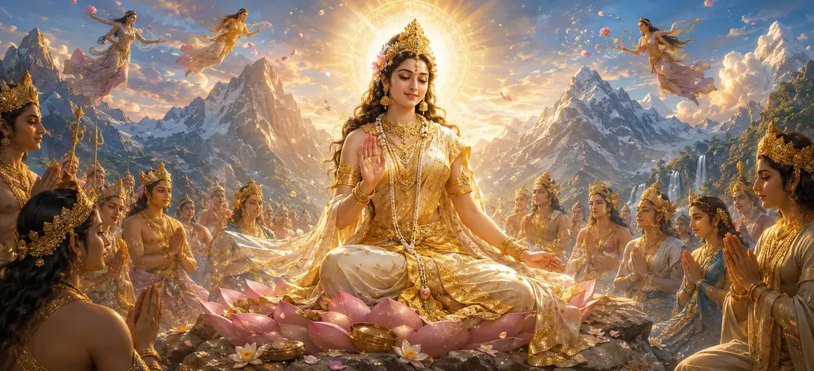

देवी को गोरा रंग प्राप्त होता है
वायवीय संहिता का पच्चीसवाँ अध्याय देवी पार्वती के चमकदार गोरे रंग को प्राप्त करने की अद्भुत और परिवर्तनकारी घटना का वर्णन करता है।
ऋषि वायु बताते हैं कि कैसे देवी की गहन भक्ति और दिव्य कृपा उनके उज्ज्वल रूप में परिणत हुई।
यह अध्याय सर्वोच्च पवित्रता, आध्यात्मिक सुंदरता और दिव्य माँ की महिमा का जश्न मनाता है।
अध्याय 25 की मुख्य बातें
दिव्य तेज
देवी पार्वती के रंग के लुभावने परिवर्तन को दर्शाता है।
शुद्ध वैभव
शुद्ध सोने और दीप्तिमान चाँदनी के समान उसके चमकते रूप का वर्णन करता है।
भक्ति का फल
यह दर्शाता है कि कितनी गहन तपस्या और समर्पण सर्वोच्च कृपा को प्रकट करते हैं।
महागौरी स्वरूप
देवी की पवित्र अभिव्यक्ति को उसकी प्राचीन महिमा में दर्शाता है।
दिव्य आनन्द
उसके उत्कृष्ट परिवर्तन को देखकर ऋषियों और देवताओं की खुशी को दर्शाता है।
कथा प्रवाह
अध्याय 26 में बाघ के लिए उच्च स्थिति प्राप्त करने का मार्ग तैयार करता है।
इस अध्याय में मुख्य विषय
देवी का अद्भुत परिवर्तन
ऋषि वायु ने विस्तार से बताया कि कैसे देवी पार्वती ने अपनी दृढ़ भक्ति और दिव्य संकल्प के माध्यम से अपने अंधेरे बाहरी आवरण को त्याग दिया।
यह दिव्य त्याग भगवान शिव के साथ परम मिलन की दिशा में उनकी आध्यात्मिक यात्रा में एक प्रमुख मील का पत्थर साबित हुआ।
चमकदार गोरे रंग का प्रकटीकरण
अपने पिछले रूप से उभरकर, देवी पिघले हुए सोने और स्पष्ट चांदनी के समान एक शानदार गोरे रंग के साथ चमक उठीं।
उनके नए रूप ने परम सुंदरता बिखेरी, तीनों लोकों को मोहित कर लिया और वातावरण को दिव्य प्रकाश से भर दिया।
तपस्या और परिणामी अनुग्रह
कथा इस बात पर जोर देती है कि यह परिवर्तन उनकी कठोर तपस्या और अटूट फोकस का प्रत्यक्ष फल था।
यह दर्शाता है कि कैसे ईमानदार आध्यात्मिक प्रयास अस्तित्व की हर परत को शुद्ध करता है और दैवीय कृपा को आकर्षित करता है।
ऋषियों एवं दिव्य प्राणियों द्वारा स्तुति
इस लुभावने परिवर्तन को देखकर, देवताओं, ऋषियों और दिव्य गायकों ने फूलों की वर्षा की और स्तुति के भजन गाए।
उन्होंने उन्हें ब्रह्मांड की माँ के रूप में सराहा जिनकी कृपा से सारी सृष्टि कायम है।
उसके दीप्तिमान स्वरूप का आध्यात्मिक प्रतीकवाद
गोरा रंग अज्ञानता (अविद्या) के अंधेरे पर विजय प्राप्त करने वाली ज्ञान (विद्या) की शुद्धता का प्रतिनिधित्व करता है।
यह भक्ति और समर्पण के माध्यम से प्राप्त चेतना की प्रबुद्ध स्थिति का प्रतीक है।
परिवर्तन प्रकरण का समापन
अध्याय 25 का समापन देवी के उज्ज्वल नए रूप की स्थापना के साथ होता है, जो उनके दिव्य मिलन और भविष्य के कार्यों के लिए तैयार है।
यह वृत्तांत पाठकों को दृढ़ भक्ति की शक्ति से प्रेरित करता है।
अध्याय 26 की ओर
इस शानदार परिवर्तन के बाद, ऋषि वायु अध्याय 26, 'बाघ को उच्च दर्जा प्राप्त होता है' सुनाने की तैयारी करते हैं।
अगला अध्याय बताता है कि भगवान शिव के निवास के आसपास के जानवरों पर भी दिव्य कृपा कैसे फैलती है।
अध्याय 25 की मुख्य शिक्षाएँ
परिवर्तनकारी तपस्या
कठोर आध्यात्मिक अभ्यास आत्मा की बाहरी और आंतरिक अभिव्यक्ति को शुद्ध और उन्नत करता है।
चमकदार पवित्रता
ईश्वरीय कृपा सर्वोच्च चमक और आध्यात्मिक सुंदरता के रूप में प्रकट होती है।
प्रकाश की विजय
बुद्धि और भक्ति सारे अंधकार और अज्ञान को दूर कर देती है।
लौकिक माँ
देवी पार्वती कृपा और भरण-पोषण का सर्वोच्च स्रोत हैं।
भक्ति का प्रतिफल
परमात्मा पर दृढ़ ध्यान सदैव उत्कृष्ट पूर्णता प्रदान करता है।
अनुग्रह का विस्तार
अध्याय 26 में बाघ की उन्नति का मार्ग प्रशस्त करता है।
आध्यात्मिक चिंतन
गोरा रंग प्राप्त करने वाली देवी हमें सिखाती है कि सच्चा आध्यात्मिक परिवर्तन भीतर से फैलता है; जब परमात्मा के प्रति हमारा समर्पण शुद्ध और अटूट होता है, तो सभी आंतरिक अशुद्धियाँ कृपा के प्रकाश में विलीन हो जाती हैं।
अध्याय 25 का संदेश जीना
नियमित आध्यात्मिक अभ्यास के माध्यम से विचार, शब्द और कर्म की शुद्धता विकसित करें।
व्यक्तिगत चुनौती के समय भक्ति की परिवर्तनकारी शक्ति पर भरोसा रखें।
अपनी आंतरिक चेतना को ज्ञान और समर्पण से रोशन करने का प्रयास करें।
प्रमुख आध्यात्मिक अवधारणाएँ
देवी पार्वती के उज्ज्वल गोरे रंग की अद्भुत अभिव्यक्ति।
गहन तपस्या के माध्यम से अंधेरे बाहरी आवरण को त्यागना।
परम दिव्य वैभव और प्रतिभा की चमक।
कठोर आध्यात्मिक तपस्या के फल का प्रत्यक्ष अनुभव।
अंधकार पर प्रकाश की विजय का आध्यात्मिक प्रतीकवाद।
अध्याय 26 में बाघ को उच्च दर्जा प्राप्त करने की प्रस्तावना।
अध्याय सारांश
वायवीय संहिता अध्याय 25 प्रस्तुत करता है कि देवी को गोरा रंग प्राप्त होता है। देवी पार्वती के अद्भुत परिवर्तन, उनकी कठोर भक्ति का फल, दिव्य स्तुति और आध्यात्मिक प्रतीकवाद पर प्रकाश डालते हुए, यह अध्याय अनुग्रह की चमकदार शक्ति का जश्न मनाता है। यह अध्याय 26, 'टाइगर अटेन्स अ हायर स्टेटस' के लिए मार्ग प्रशस्त करता है।
अक्सर पूछे जाने वाले प्रश्न
1. वायवीय संहिता अध्याय 25 का प्राथमिक विषय क्या है?
अध्याय 25 में देवी पार्वती के दिव्य परिवर्तन और उनके उज्ज्वल गोरे रंग की प्राप्ति का विवरण दिया गया है।
2. देवी पार्वती को यह शारीरिक परिवर्तन क्यों करना पड़ा?
यह उनकी गहन तपस्या और दैवीय कृपा की पराकाष्ठा थी, जिसमें उनका सर्वोच्च प्रकाशमान रूप महागौरी के रूप में प्रकट हुआ।
3. इस अध्याय में देवी के दीप्तिमान रंग का वर्णन किस प्रकार किया गया है?
इसे शुद्ध सोने, चांदनी और सफेद कमल की तरह चमकता हुआ बताया गया है, जो सर्वोच्च शुद्धता और दिव्य ऊर्जा का प्रतीक है।
4. यह अध्याय किस आध्यात्मिक सत्य को व्यक्त करता है?
यह बताता है कि कठोर आध्यात्मिक भक्ति और आंतरिक शुद्धि आत्मा की सहज चमकदार और दिव्य प्रकृति को प्रकट करती है।
5. वायवीय संहिता में इस पवित्र घटना का वर्णन कौन करता है?
ऋषि वायु वायवीय संहिता की शिक्षाओं के भाग के रूप में एकत्रित ऋषियों को ये पवित्र इतिहास सुनाते हैं।
6. अध्याय 25 के बाद नेविगेशन के लिए अगला अध्याय कौन सा है?
नेविगेशन के लिए अगले अध्याय का शीर्षक 'द टाइगर अटेन्स ए हायर स्टेटस' है।
"जब तपस्या से सारा अंधकार दूर हो जाता है, तो आत्मा दिव्य कृपा की सुनहरी चमक से चमक उठती है।"
वायवीय संहिता के माध्यम से जारी रखें
अध्याय 25 का समापन हुआ, देवी को गोरा रंग प्राप्त हुआ। बाघ को उच्च दर्जा प्राप्त होता है जारी रखें।